Wiga Mobile merupakan aplikasi sistem informasi terintegrasi yang dikembangkan secara mandiri oleh tim IT Institut Teknologi dan Bisnis Widya Gama Lumajang yang secara resmi diluncurkan pada tanggal 12 Desember 2025 dan secara aktif diterapkan pada periode genap tahun akademik 2025/2026 sebagai wujud komitmen institusi dalam mewujudkan transformasi digital kampus yang berkelanjutan.
Pengembangan Wiga Mobile telah dirancang secara strategis sejak bulan september tahun 2023, diawali dengan pembangunan fondasi sistem inti kampus yang mencakup Sistem Informasi Keuangan, Digital Signature, Single Sign On (SSO), serta Sistem Informasi Akademik. Fondasi ini dikembangkan untuk memastikan keamanan data, efisiensi proses, dan kemudahan akses bagi seluruh civitas akademika.
Wiga Mobile tidak hanya berfungsi sebagai aplikasi, melainkan sebagai ekosistem digital kampus yang mengintegrasikan berbagai layanan dan sistem informasi dalam satu platform terpadu. Ke depan, Wiga Mobile direncanakan untuk terus dikembangkan dengan mengintegrasikan berbagai sistem pendukung lainnya, antara lain Sistem Informasi Kepegawaian, Inventory, Tracert Study, E-Quality, E-Class / Learning Management System, Akreditasi, E-Resource, E-statistik serta layanan digital kampus lainnya yang mendukung proses akademik, administrasi, dan pengambilan keputusan berbasis data.
Melalui satu identitas dan satu akses, Wiga Mobile menghadirkan pengalaman digital yang lebih sederhana, terukur, dan efisien, sekaligus menjadi fondasi bagi terwujudnya kampus cerdas, modern, dan adaptif terhadap perkembangan teknologi.

Untuk memulai menggunakan aplikasi Wiga Mobile baik dengan menggunakan Laptop maupun Smartphone, caranya cukup akses alamat url https://sso.itbwigalumajang.ac.id melalui aplikasi web browser yang tersedia.

Untuk mempermudah apabila menggunakan smartphone, tambahkan shortcut dengan menekan Install saat pertama kali mengakses Wiga Mobile.
Setelah berhasil login, tampilan pertama adalah ekosistem aplikasi yang nantinya akan dikembangkan secara bertahap. Untuk sementara terdapat 2 aplikasi yang sudah siap digunakan oleh temen-temen mahasiswa untuk proses kegiatan akademik yakni Siakad (Sistem Informasi Akademik) dan Wiga Pay (Sistem informasi pembayaran kuliah) dilingkungan Institut Teknologi dan Bisnis Widya Gama Lumajang.

Pembayaran biaya kuliah dilingkungan Institut Teknologi dan Bisnis Widya Gama Lumajang mulai semester Genap tahun akademik 2025/2026 sudah memanfaatkan ekosistem digital Wiga Mobile. Dengan adanya Wiga Mobile, diharapkan proses administrasi keuangan menjadi lebih tertib serta mempercepat proses validasi pembayaran kuliah secara digital.
Untuk mengakses aplikasi Wiga Pay dapat melalui portal Wiga Mobile atau melalui halaman dasboard Siakad.

Pembayaran kuliah melalui Wiga Pay menerapkan 2 fase yaitu:
- Pembayaran Biaya Kuliah (Saldo Wiga Pay)
- Klasifikasi Pembayaran Biaya Kuliah
Fase Pertama
adalah fase dimana mahasiswa melakukan transfer sejumlah nominal yang sesuai ke nomor rekening kampus dengan membuat tiket pembayaran terlebih dahulu pada Wiga Pay sebelum melakukan transfer, supaya sistem dapat mengenali pembayaran yang dilakukan oleh mahasiswa dan menjadi saldo pada aplikasi Wiga Pay.
Pembayaran melalui Bank BRI, BNI, dan Mandiri terdapat penambahan 3 digit kode uniq sebagai identitas pembayaran mahasiswa, dimana 3 digit tersebut akan terbentuk secara random setiap kali membuat tiket pembayaran. Lakukanlah transaksi pembayaran sesuai dengan nominal yang tertera pada aplikasi. Sedangkan untuk Bank Jatim dikarenakan menggunakan Virtual Account maka tanpa adanya penambahan 3 digit kode uniq.

Setelah proses transaksi pembayaran pada bank tujuan selesai, maka sistem akan secara otomatis mengidentifikasi dan merubah saldo Wiga Pay maksimal 15 menit setelah transaksi berhasil.

Fase Kedua
adalah fase dimana mahasiswa melakukan klasifikasi pembayaran terhadap tagihan pembayaran. Klasifikasi pembayaran dilakukan secara mandiri dengan nominal yang dapat disesuaikan kebutuhan dan selama saldo Wiga Pay masih tersedia.
Langkah Pertama
Informasi tagihan untuk setiap jenis pembayaran termuat pada halaman beranda maupun halaman keuangan, dimana terdapat keterangan belum lunas serta jumlah tagihan yang harus dibayar atau dilunasi. Untuk melakukan pembayaran atas tagihan tersebut silahkan pilih dan click pada tagihan tersebut seperti pada gambar berikut.
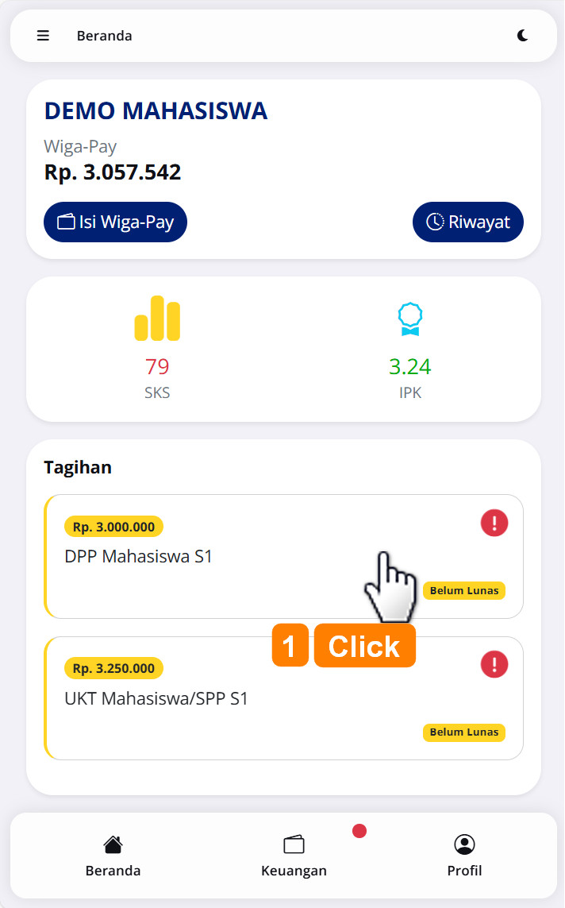
Langkah Kedua
Masukkan nominal yang hendak dibayarkan untuk tagihan tersebut, kemudian click Bayar Sekarang
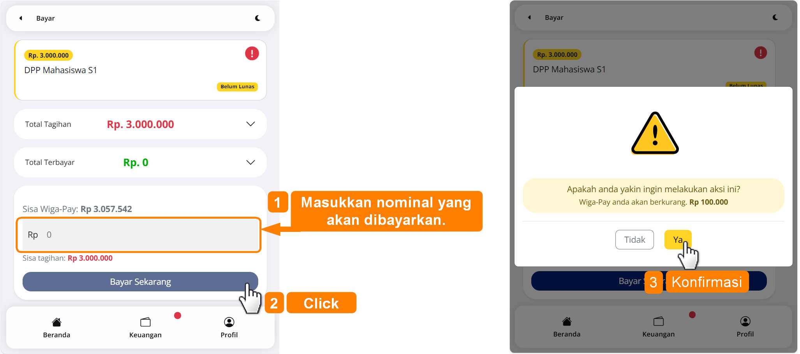
Berikut contoh pembayaran tagihan yang berhasil dilakukan.
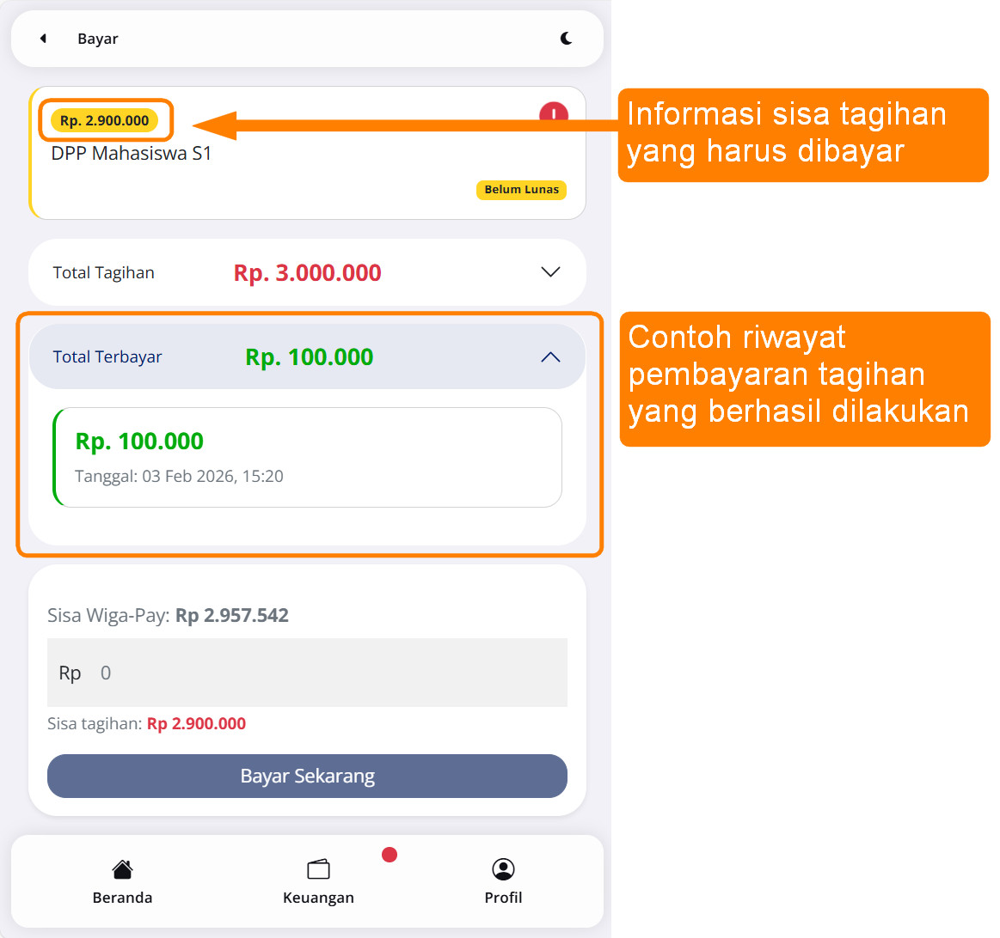
Sebelum mahasiswa mengikuti perkuliahan pada semester berjalan, mahasiswa diwajibkan melakukan penyusunan Rencana Studi melalui fitur Rencana Studi pada Sistem Informasi Akadmik (SIAKAD). Fitur tersebut dapat membantu mahasiswa dalam menyusun mata kuliah yang akan diambil pada semester berjalan secara mandiri, terstruktur, dan terintegrasi dengan sistem akademik kampus. Melalui fitur ini, mahasiswa dapat melihat daftar mata kuliah yang tersedia sesuai dengan kurikulum, semester, serta ketentuan akademik yang berlaku.
Proses penyusunan Rencana Studi dilakukan melalui sistem informasi akademik (SIAKAD)

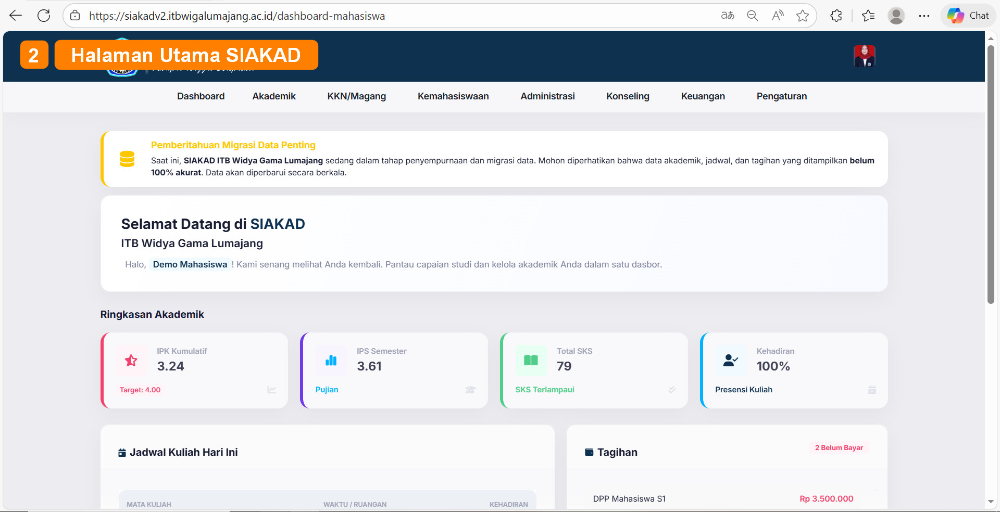
Langkah Pertama
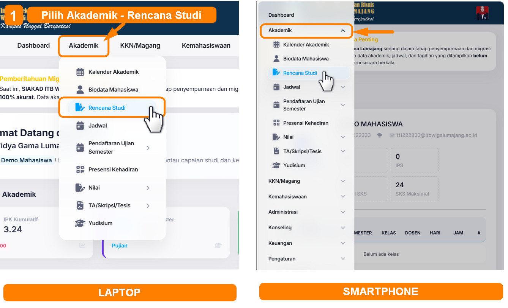
Langkah Kedua
Pilih beberapa matakuliah yang sesuai dengan semester dan kelas, tekan tombol pilih untuk memilih matakuliah tersebut sebagai Rencana Studi pada semester berjalan.
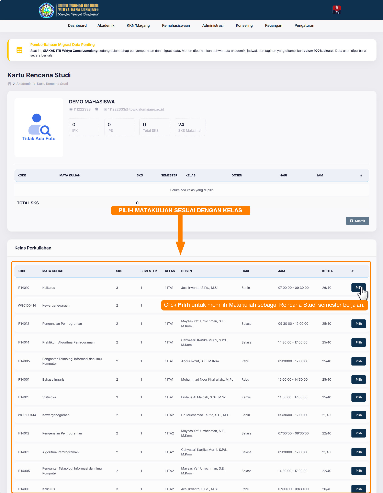
Langkah Ketiga
Ketika beberapa matakuliah sudah terpilih dan sudah sesuai dengan Rencana Studi yang akan ditempuh pada semester berjalan, selanjutnya tekan tombol SUBMIT untuk mengirimkan rencana studi tersebut kepada Dosen Pembimbing Akademik (DPA) untuk dilakukan konfirmasi persetujuan oleh masing-masing DPA.
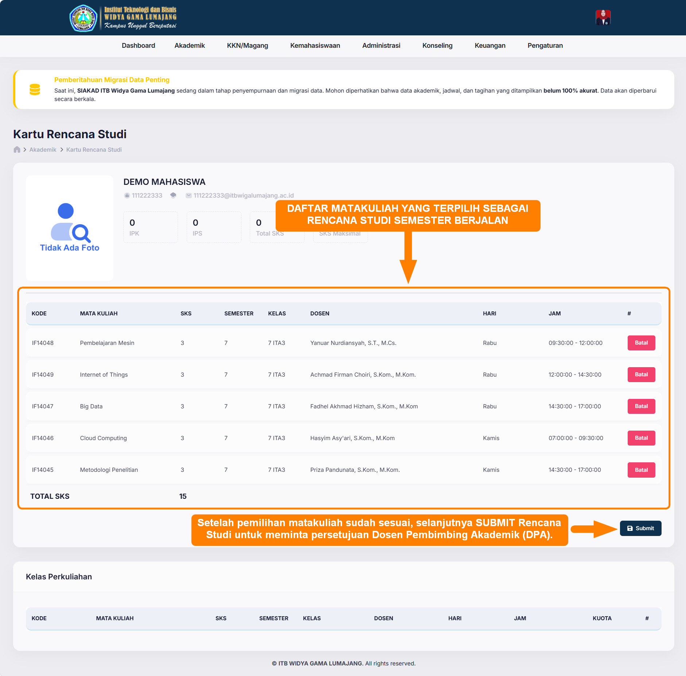
Terakhir
Tunggu hingga rencana studi sudah terkonfirmasi dan disetujui oleh masing-masing DPA. Ketika DPA sudah melakukan konfrimasi dan menyetujui Rencana Studi mahasiswa, maka dokumen rencana studi akan terbentuk dan sudah tertandatangai secara digital seperti pada contoh berikut.
Rencana Studi Terkonfirmasi
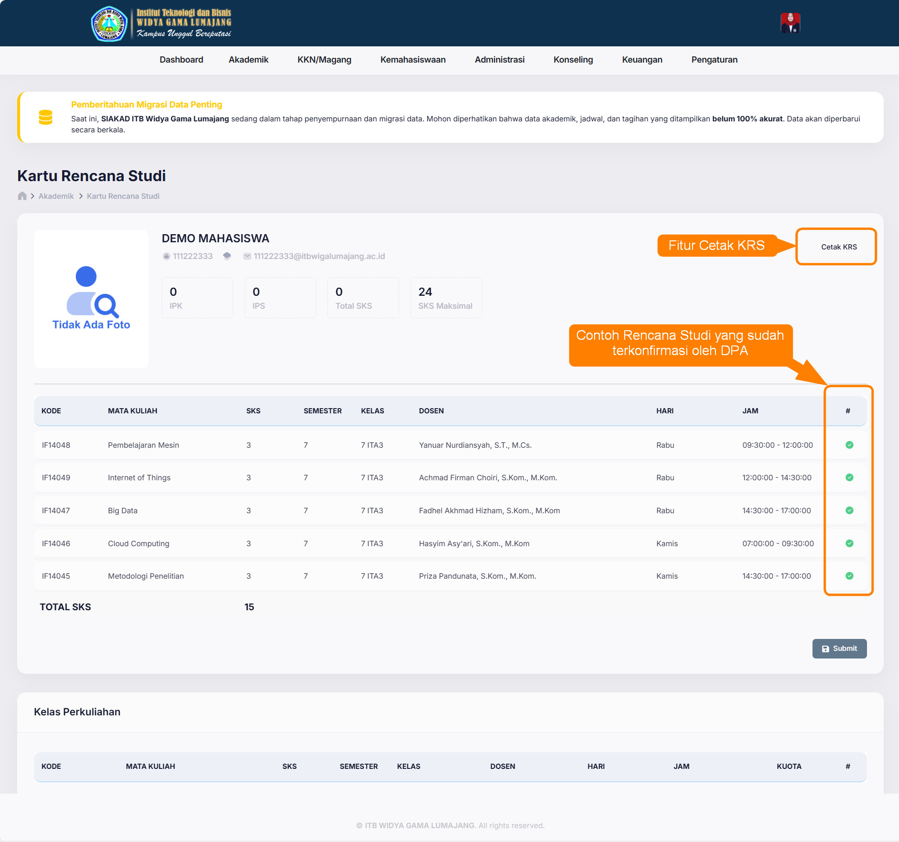
Print Out Rencana Studi
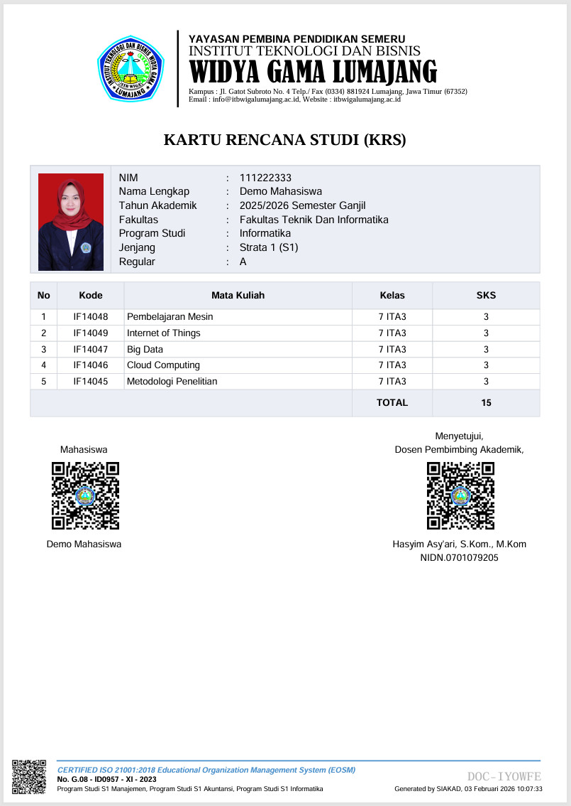
Digital Signature
Print out rencana studi yang sudah terkonfirmasi akan tertandatangani secara digital dan untuk menjamin keasliannya QR-Code tersebut ketika discan maka akan menampilkan beberapa informasi seperti pada gambar berikut.
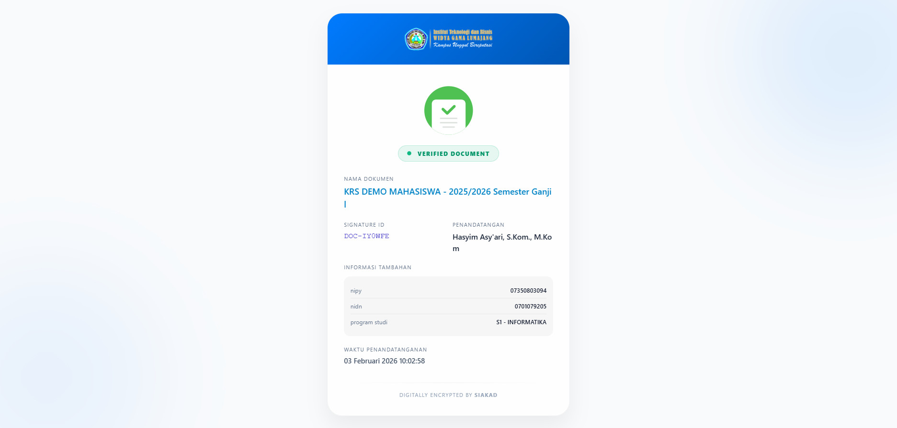
Penerapan absensi secara digital dengan memanfaatkan teknologi informasi memberikan perubahan pola absensi mahasiswa yang sebelumnya melakukan absensi tanda tangan secara manual, kini dengan Wiga Mobile proses absensi perkuliahan mahasiswa dilakukan dengan cara Scan QR-Code. Dimana QR-Code akan diinformasikan oleh masing-masing dosen pada saat perkuliahan berlangsung. Dengan adanya perubahan pola absensi secara digital mengharuskan dan menjadi wajib hukumnya bagi mahasiswa untuk taat pada proses administrasi akademik khususnya Rencana Studi meliputi programming Rencana studi tepat waktu, pemilihan kelas yang tepat, pembayaran kuliah sesuai ketentuan yang berlaku dan konsultasi perwalian yang tepat dikarenakan apabila terdapat kesalahan seperti pemilihan kelas akan berdampak terhadap tidak terecordnya absensi mahasiswa yang bersangkutan.
Langkah Pertama
Untuk membuka fitur scan QR-Code, pilih menu Akademik lalu pilih Presensi Kehadiran seperti pada gambar berikut.
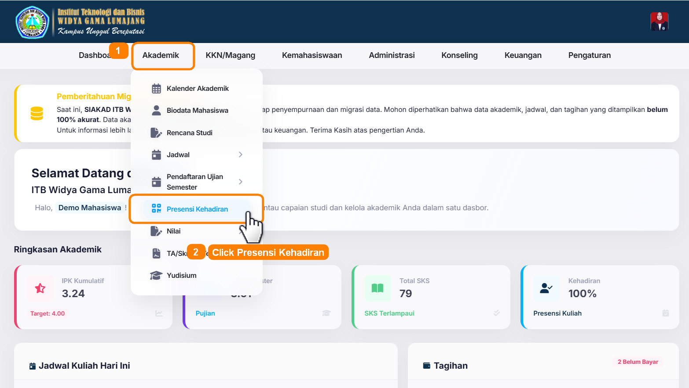
Langkah Kedua
Pada halaman presensi kehadiran terdapat informasi tentang riwayat absensi perkuliahan yang sudah pernah dilakukan, selain itu juga terdapat fitur mengaktifkan kamera untuk scan QR Code. Untuk melakukan scan QR Code absensi perkuliahan seperti pada gambar berikut.
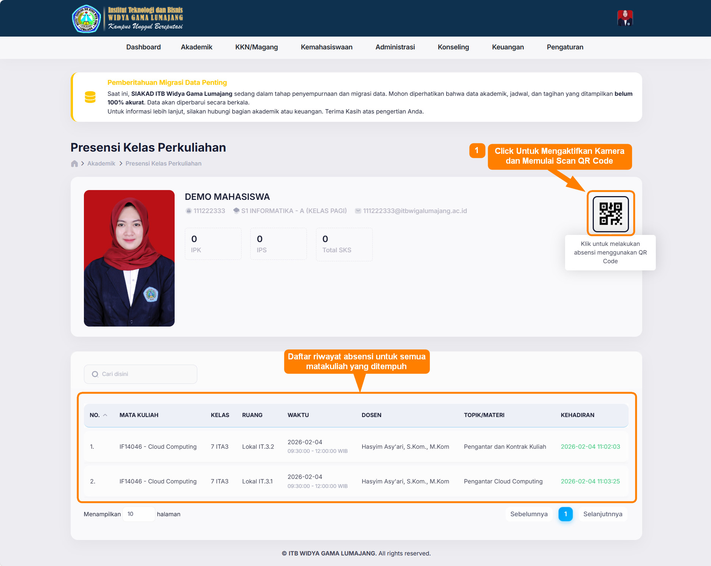
Aplikasi Scan QR Code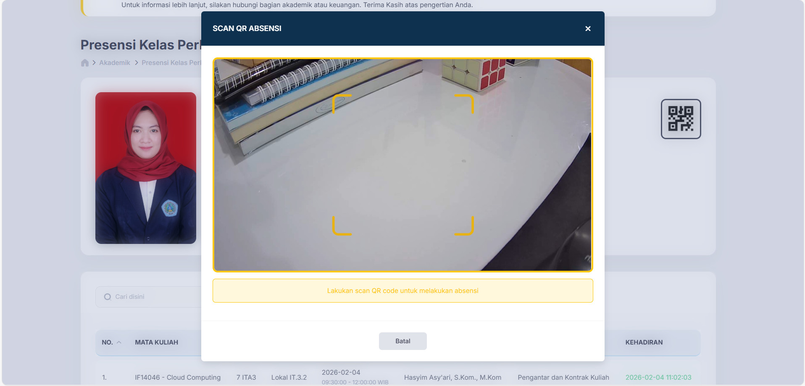
Langkah Ketiga
Adapun nofitikasi setelah melakukan scan kode QR terdapat beberapa notifikasi sesuai dengan kondisi tertentu seperti pada gambar berikut:
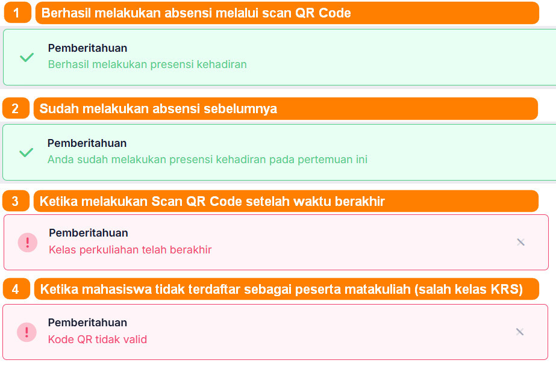
Registrasi Ujian
Registrasi Ujian